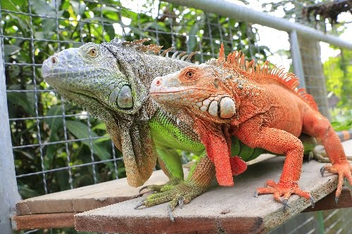

อิกัวนา (Iguana)

เป็นสัตว์เลื้อยคลานจำพวกกิ้งก่า เป็นกิ้งก่าขนาดใหญ่ สีเขียว หัวโตมีหนามแหลมคล้ายหวีอยู่แนวกลางของลำตัว ซึ่งหนามนี้จะเห็นได้ชัดที่สุด ตั้งแต่ตรงคอไปถึงหาง บริเวณลำคอมีปุ่มกลมขนาดใหญ่ ใต้คอมีเหนียงขรุขระขนาดใหญ่ตัวผู้ตัวโต มีหัวโตและมีแผงหนามชัดเจนกว่าตัวเมีย
มีที่มาจากทวีปอเมริกาใต้ และถูกพบได้มากที่สุดในแถบอเมริกาตอนกลาง อเมริกาตอนใต้ และ ในแถบคาริเบี้ยน อายุของอีกัวน่าโดยเฉลี่ยแล้วอยู่ได้ประมาณ 10-15 ปี ในสถานที่เลี้ยง
อิกัวน่าเป็นสัตว์ที่กินไม่เลือก เมื่อเป็นสัตว์กินพืช อิกัวน่ากินใบไม้ หญ้า พืชต้นเล็กๆ ดอกไม้ ผลไม้ และเมล็ด และอาหารที่ดีที่สุด สำหรับ มันก็หลากหลาย ไม่มีพืชชนิดใดที่มีสารอาหารที่อิกัวน่า ต้องการครบถ้วนการให้อิกัวน่ากินอาหารที่มีแต่สารอาหารชนิดเดียวจะทำให้มัน เป็นโรคขาดสารอาหารได้อิกัวน่าที่เป็นสัตว์เลี้ยงที่จะไมค่อยออกไปบริเวณอื่น ดังนั้นจึงจำเป็นมากที่จะต้องให้มันกินอาหารหลากหลายชนิด
เบียร์ดดราก้อน หรือ มังกรเครา (Bearded dragon)
กระจายพันธุ์อยู่ในทะเลทราย ที่มีภูมิประเทศเป็นเทือกเขาสลับกับเนินทรายเตี้ยๆ ในประเทศออสเตรเลีย แถบรัฐควีนส์แลนด์, นอร์เทิร์นเทร์ริทอรี, นิวเซาท์เวลส์ และวิกตอเรีย โดยหากินและอาศัยอยู่บนพื้นมากกว่าจะปีนป่ายตามก้อนหินหรือต้นไม้
กินอาหารได้ทั้งพืชและสัตว์ เช่น หนอน, แมลง, กิ้งก่าขนาดเล็ก, ผักชนิดต่างๆ
เบียร์ดดราก้อน นิยมเลี้ยงเป็นสัตว์เลี้ยง เพราะมีอุปนิสัยไม่ดุร้าย ไม่กัดหรือทำร้ายมนุษย์ โดยสามารถเพาะขยายพันธุ์ในที่เลี้ยงได้ โดยมักจะเป็นตู้ปลาที่ปูพื้นด้วยทรายหรือกรวดแห้ง ๆ เหมือนสภาพที่อยู่ในธรรมชาติ
กิ้งก่าคาเมเลี่ยน (Chameleon)
กิ้งก่าคาเมเลี่ยนมีทั้งหมดด้วยกันประมาณ 140–150 ชนิด แพร่กระจายพันธุ์ในทวีปแอฟริกา บนเกาะมาดากัสการ์ และบางพื้นที่ในอินเดีย และภาคพื้นอาหรับ รวมทั้งยุโรปตอนใต้ คือ สเปน และโปรตุเกส โดยเป็นกิ้งก่าที่นิยมเลี้ยงกันเป็นสัตว์เลี้ยง
เป็นกิ้งก่าที่มีรยางค์ขาและมีลักษณะจำเพาะคือ ลำตัวแบนข้างมาก หางมีกล้ามเนื้อเจริญและใช้ยึดพันกิ่งไม้ได้ บนหัวและด้านหลังของคอมีสันเจริญขึ้นมาปกคลุม นิ้วเท้าแยกจากกันเป็นสองกลุ่ม คือ 2 นิ้วกับ 3 นิ้ว
อีกทั้งยังถือว่าเป็นกิ้งก่าที่สามารถเปลี่ยนสีได้อย่างรวดเร็วอีกด้วย เพื่อใช้ในการพรางตัว กิ้งก่าคาเมเลี่ยนหากินและใช้ชีวิตในเวลากลางวัน ขณะที่กลางคืนจะเป็นเวลาพักผ่อน เซลล์เม็ดสีก็จะพักการทำงานด้วย ดังนั้นในเวลากลางคืน สีต่าง ๆ ของกิ้งก่าคาเมเลี่ยนจะซีดลง บางชนิด บางตัวอาจจะซีดเป็นสีขาวทั้งตัวเลย